{kind=link}
{kind=link}
 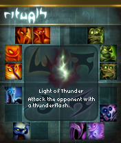
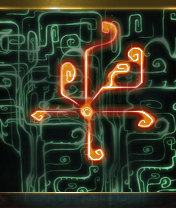
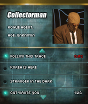
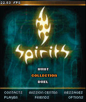
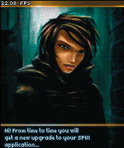
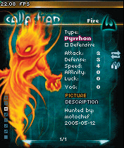
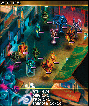
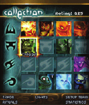
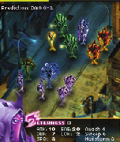
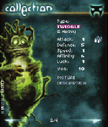
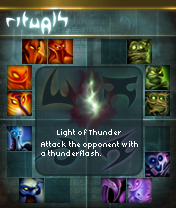
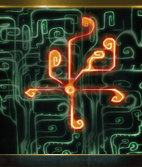
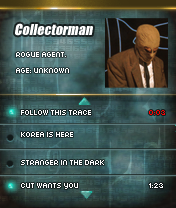
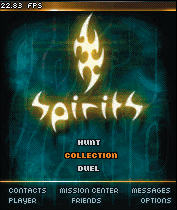
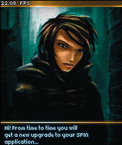
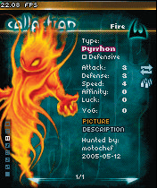
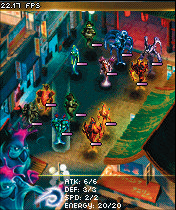
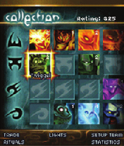
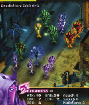
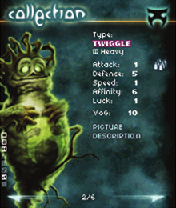
When Nokia, together with Sega, released Pocket Kingdom: Own the World on 24 November 2004, it was clear: the N-Gage Arena was meant for more than just downloadable content or online leaderboards. The time had come for the first mobile MMO game for this platform and it was great, even if it didn't last long.
Whether someone in Sweden recognised this enormous potential at that moment and created SPIRITS, remains unclear, but if Nokia hadn't pulled the plug on the N-Gage, we would have been in for something that would have left Sega's efforts in the dust.
This is the story of SPIRITS. Jadestone's cancelled massively multiplayer online dueling game, a title which could have potentially turned the tide of the N-Gage with its deep mythology and dark, unique atmosphere.
An historical reappraisal of the Nokia N-Gage story may seem unusual, or uninteresting to many, but what platform can claim to have so many unreleased games? We know of at least 24. Compare that to a total of just 55 officially released games, there remains yet another 30 percent of titles waiting to be discovered.
This is the second article in this series and while I'm sure it won't be the last, I hope you enjoy reading this and that I can get you at least a little inspired about the Nokia N-Gage and its history.
To cut a long story short: On behalf of the entire Nokia N-Gage community, I hope you enjoy this striking collection of lost media and the story that goes with it.
The game is pitched as follows:
We have always sensed their importance. Throughout the history of mankind, the four elements have been linked with mysterious forces. From ancient religous lore to the mythical pursuits of medieval alchemists.
The true nature of the elemental powers is both wonderful and frightening. Our planet is teeming with mysterious and powerful spirit beings, connected to the four elements: earth, water, wind and fire. They can’t be seen, but [their] influence stretches from the slightest whiff of wind to the most fearsome earthquake.In the game SPIRITS, modern technology has closed the gap between our world and the spirit dimension. The immense power of the elements can now be used for good or evil. Unfortunately, evil is a step ahead…
— The internal style guide
It all started quite businesslike and practical back in 2002 with a concept, whose game and technical design were further refined during the course of 2003, until around December of the same year, when Jadestone started to turn it into a demo for Symbian S60 phones, which was never intended for the consumer market. This was developed to showcase a practical use case for the SIP protocol that Nokia was promoting at the timeSource: GlobeNewswire, archived from the original on February 21, 2001. Retrieved November 5, 2021..
The idea was that you could challenge a friend for a battle and
your friend didn't have to have the game running when you sent the
challenge
, said Björn Ritzl, who worked together with Per
Malmén as a programmer on the project, shortly after he joined
Jadestone. For him, as for many others involved, it was the first
project he had worked on. The first version of Spirits was
based on an idea by Johan Mogren
, he continued.
The front of an authentic reproduction made by Timo Weirich in 2021 based on the original layout.
After the original demo of the game was delivered in September 2004, it was already clear that this idea had more potential to offer, so Jadestone decided to develop a full-fledged game for the consumer market, and to do this for the Nokia N-Gage seemed logical — it was a very promising platform at the time, with existing online infrastructure and games sold in stores, at retail prices. Because of this, Jadestone submitted a proposal as early as October 2004.
We developed the initial demo game for Nokia and although never
intended for regular consumers, we all realized that we had a
really fun and engaging (no pun intended) game. I think it was
really a nobrainer for us to sell and for Nokia to buy an expanded
game, with a more ambitious storyline
, states Jonas
Haraldson, former Marketing Director at Jadestone.
The back of an authentic reproduction made by Timo Weirich in 2021 based on the original layout.
Then, in April 2005, a month before E3, marketing planning for the game's release began. One week before E3, on May 12, 2005, SPIRITS was officially announced and a demo was made available for selected media outlets.Source: Nokia, archived from the original on May 12, 2005. Retrieved May 25, 2005. Download press release.
Steve Palley, the GameSpot journalist who covered the demo
afterwards, predicted Spirits is at least eight months away
from prime time, but the ideas, graphics, and infrastructure are
already in place.
Source:
GameSpot, archived
from the original on May 20, 2005. Retrieved December 29,
2005. This seems plausible and also allows for conclusions
to be drawn about the unexpected end of the project, since Nokia
ultimately discontinued the N-Gage in October
2006Source: All About
Symbian, archived
from the original on October 5, 2006. Retrieved November 3,
2006.. This end however, was already apparent far in
advance.
The backstory is as follows:
The main storyline starts with a young girl who has the unusual power to see the spirits. In the late 1960s she is abducted in order to be used for military research. The goal is to turn elemental energy into powerful weapons.
Things go wrong, however, and raw elemental energy is unleashed, with disastrous consequences. As a result, the research program is abruptly terminated. The girl is hidden away in a drug induced […] coma.
Many decades later — in the present time — she is found and captured by the Japanese leader of a mysterious sect. Wanting to decimate Earth's overpopulation, the plan is to use her as a doomsday weapon. An unsuspecting humanity is facing enormous casualties. The only thing that stands between the sect and global holocaust is an underground network of youths — the Vivid Resistance. Secretly brought together by the old, remorseful leader of the original arms research program, they use specially equipped cellphones to master the art of spirit control. With the lives of millions of innocent people at stake, the player is called upon to join the Vivids and face the deadly agents. To stand even a remote chance, they must master the elements.
— The internal style guide
The official website described the game like thisSource: n-gage.com, archived from the original. Retrieved October 13, 2005.:
A long time ago, peace ruled the Earth as mankind lived in harmony with nature and all the other inhabitants of the planet - those you could see and those you couldn’t. Spirit beings born out of the four elements were all around us, and some humans could even communicate with them.
The memory of those ancient times is buried somewhere in the collective consciousness of mankind, but there are still spirit beings here to this day. SPIRITS™ tells the story of people that have been involved with the spirits in different ways over the millenia. The epic saga, which began in the ancient past of humanity, now plays out in the streets of today’s metropolitan cities.
SPIRITS™ is a massively multiplayer online (MMO) game with one main objective. You must fight the CUT - a doomsday sect trying to stop overpopulation by creating natural disasters to kill innocent people. You’ll have to hunt and collect spirits, test your skills in duels, perform rituals, and take on challenging missions that require tactical thinking and speedy reflexes.
In addition, Jadestone sums it up on the company's own website as followsSource: Jadestone, archived from the original. Retrieved March 3, 2005.:
Spirits is a major online game format currently under development. When launched, it will draw players into an ancient conflict between spirit masters vying for control over powerful elemental spirits. Based on a compelling alternate reality story, the game will take players into a 24-hour multiplayer gaming experience.
Besides a story resonating with current world issues as well as ancient mythology, the game will offer players many levels of enjoyment. Competitive gameplay and collectible game resources will draw players into an environment built to support extensive community building.
The game is set to be unique in its full integration of PC and cellphone in both the gameplay and the business model.
This is the only reference to a PC version. It can be assumed that this idea was discarded since it was explicitly mentioned in the press report that SPIRITS will only be available on the N-Gage platform. It is also possible that the web interface was referred to, which I will touch on later.
There are four basic gameplay elements in SPIRITS:
The core gameplay in SPIRITS is based on players hunting and collecting spirits. Gamers will test their skills in duels where tactical thinking, as well as quick reactions, will make all the difference. In the race to save mankind, there is only one way to win: mastering the elements.
To get new SPIRITS, you'll have to participate in a little minigame, called a hunt, where you catch spirits as they float around. However, the essential aspect of the game is the duel mechanics: you put together 6 SPIRITS that represent your team. Your team and the opponent's team then face each other on an isometric arena. To fight, you choose your own SPIRIT with which you can target one of your opponent's SPIRITS. The two SPIRITS collide and damage points are assigned accordingly. The game is turn-based, but since both players make decisions at the same time, the game mechanics are loosened up a bit.
Besides the core gameplay, there were other features that are
worth mentioning. For example, Oscar Berg, the web and front-end
developer involved, talked about a web interface through which the
player could perform certain activities: If something it might
be worth while to mention that the n-gage game was going to be
complemented by a web portal where it was possible to arrange your
team and trade spirits with your friends
. Technically, this
feature worked, although it was probably not production-ready.
Martin Vilcans, one of the programmers, also mentioned another
idea that was discussed at the time: We even had some ideas of
letting the device's geolocation affect what type of spirit you
got when you hunted them. If you were close to water, it
would be more likely that you get a water spirit for
example. Comparing the game concept to Pokémon Go is not far off,
but Spirits had cooler graphics
. Ultimately, however, this was
just an idea that would not have been technically feasible and was
therefore not investigated further.
These are the people I know were involved in the development of SPIRITS. Unfortunately, I can't say for sure that this list is complete and I may add to it at a later date.
Also, it's proving a bit difficult to figure out who worked on the main game and demo, and who only worked on one of them. The names I know for sure are marked accordingly.
Later, after Nokia pulled out, Jadestone began to develop a PC MMO based on SPIRITS. However, the project was put on ice due to funding problems.
Rikard Herlitz, a lead developer at Jadestone, published a short video of a tech demo that was developed using the jMonkeyEngine.
Source: YouTube, Spirits Tech demo. Download: mp4
However, this demo had little to do with the original vision of
SPIRITS, but rather resembled a fantasy-oriented MMO comparable to
Word of Warcraft. Johan Mogren concurred, adding: From my
perspective, it was central that the player was playing as
himself, not an avatar
.
There is no magic involved and no spells are cast.
Everything I could find on SPIRITS impressed me deeply. While the graphics of the preliminary demo were still relatively colorful, it quickly became clear what SPIRITS would evolve into: a distinctive, unique game with a deep mythology that subtly interweaves the reality of SPIRITS with our own. An alternative reality that addresses both current world problems and ancient mythology, reflecting a world that seems to resemble ours, but is dominated by a dark and enigmatic allure.
I also really like how SPIRITS has incorporated the player's N-Gage into the story, sort of as a tool to master the art of spirit control. I've only seen something similar in Ingress, an augmented reality MMO by Niantic, Inc. where the player's smartphone or tablet is turned into a scanner that is used to fight and capture enemy territory. However, this was in late 2013, almost a decade later. In retrospect, SPIRITS was definitely ahead of its time — a fact that doesn't seem to be an isolated case in the history of the Nokia N-Gage.
No one can say for sure how and if SPIRITS would have been successful, but with the remaining N-Gage game library in mind and in contrast to Sega's Pocket Kingdom, we probably missed out on one of the best titles, and especially on one of the few that could have fully exploited the platform's potential.
“This game changed my life as well as many others.” — Johan Mogren about SPIRITS
“[…] When Pokemon Go became a hit I thought alot of what could have been with the Spirits brand since they are quite similar. Sure, more Pokemons to collect but on the other hand the Spirit battle were actually fun” — Per Malmén
Of course, this article will not deprive you of the fabulous artwork and visuals of this unique world, and also the mythology that surrounds SPIRITS. I decided to present it separately and divide it into categories. These are organized as follows:
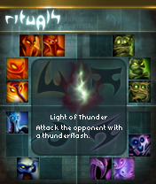
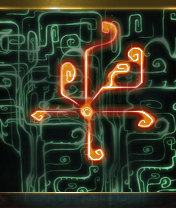
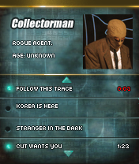
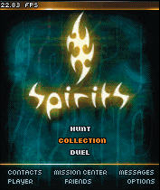
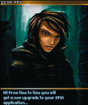
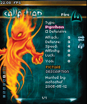
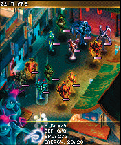
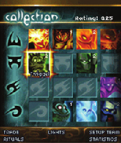
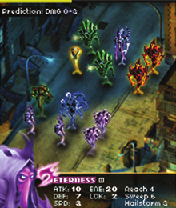
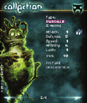
 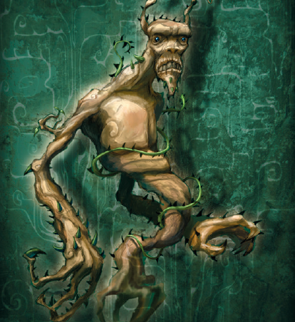
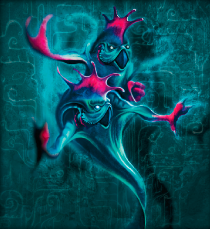
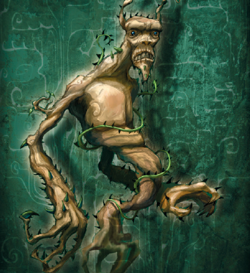
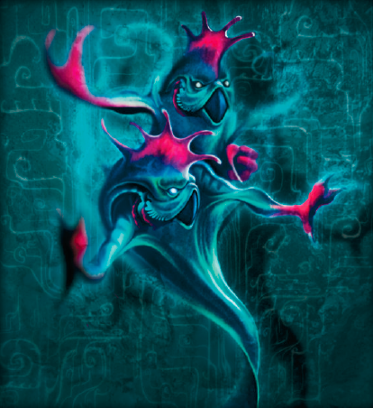
 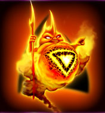
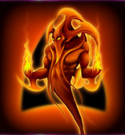
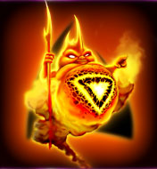
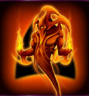
 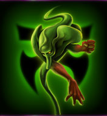
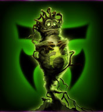
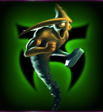
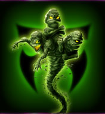
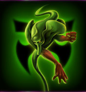
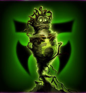
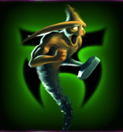
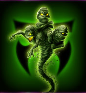
 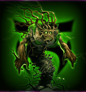
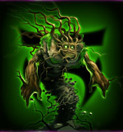


I hope you enjoyed this article. If not, let me know – I welcome constructive feedback to improve the quality of my content. If you are interested in the Nokia N-Gage in general, you are cordially invited to visit our small online community. You can find us on Discord, Telegram and in #ngage on EFnet.
At this point I would like to thank my friends Razvan and Dan Whelan, without whom this article would never have been possible.
I would also like to thank Timo Weirich, owner and curator of the virtual online museum retro-net.de for his continous support and insights, and glmdgrielson from the Hit Save!-Discord for taking the time to revise this article in his fantastically nitpicky way.
Furthermore, I would, of course, like to thank all the people involved who so willingly invested time in giving me the information I was looking for. Without people like you, it would not be possible to preserve and pass on video game history.